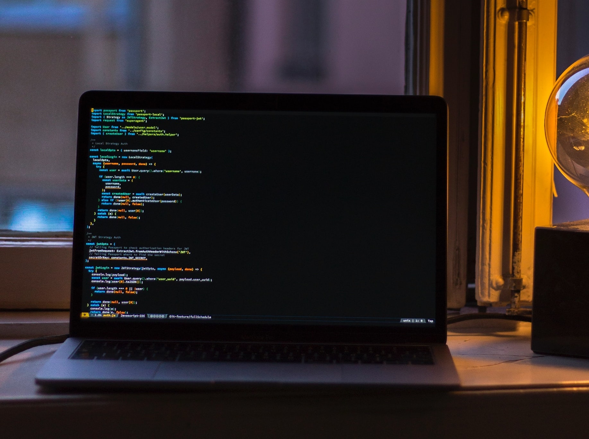

Automação Sale Automatic Machines - Python + Selenium
Está automação foi desenvolvida para a empresa Sale Automatic Machines com o objetivo de lançamento
de dados entre sistemas. A aplicação consiste em fazer os lançamentos das sangrias diárias de cada
maquina em um sistema web interno. Para isso, desenvolvi uma automação em Python utilizando o
Selenium fazendo a extração dos dados em uma tabela excel.